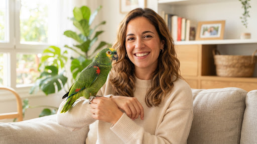
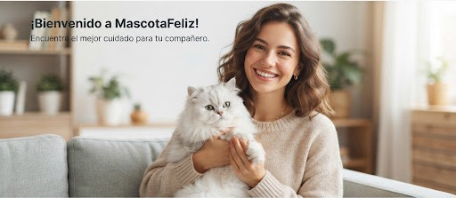

Perros
CaninosMedicina preventiva integral, desparasitación rigurosa, estética canina hipoalergénica y la mejor nutrición premium para cada etapa de su vida.
- Plan Cachorro & Senior
- Peluquería y baños medicados
- Traumatología y ortopedia
Centro Veterinario Colegiado & Farmacia
Atención médica integral, medicina preventiva, especialistas en aves exóticas y la mejor tienda de alimentos y salud para tus consentidos.

Dra. Sarah Jenkins
Hoy libre3 turnos disponibles
Atención Inmediata
Triaje médico directo por WhatsAppAtención Personalizada
Diseñamos protocolos clínicos y espacios exclusivos adaptados a la fisonomía y comportamiento de tu mascota.
Medicina preventiva integral, desparasitación rigurosa, estética canina hipoalergénica y la mejor nutrición premium para cada etapa de su vida.
Salas clínicas exclusivas sin aromas de perros ni estrés sonoro, nutrición renal / urinaria y vacunación triple felina certificada.
Médicos expertos en psitácidos, canarios y paseriformes: arreglo de pico y plumas, diagnóstico de parasitosis y asesoría de enriquecimiento ambiental.
Servicios clínicos
Tarifas transparentes, médicos especializados y protocolos clínicos del más alto rigor científico.
 Consulta General
Consulta General
Examen físico completo, revisión dental, peso, auscultación y plan nutricional adaptado.
 Aves & Exóticos
Aves & Exóticos
Diagnóstico aviar por especialistas titulados, chequeos de plumaje, corte de pico y pautas de hábitat.
 Inmunización
Inmunización
Cartilla sanitaria oficial, microchip internacional, rabia, pentavalente canina y triple felina.
 Guardia 24 Horas
Guardia 24 Horas
Quirófanos equipados, anestesia inhalatoria, ecografía Doppler y analíticas sanguíneas en 15 minutos.
Farmacia y Nutrición
 Perro Cachorro
-15% OFF
Perro Cachorro
-15% OFF
Para cachorros de razas grandes hasta los 15 meses.
 Farmacia Canina
Farmacia Canina
Protección continua por 12 semanas contra pulgas y garrapatas.
 Gatos Higiene
Gatos Higiene
Ultra aglomeración, libre de polvo en un 99.8% y neutralizador de olores.
 Aves Nutrición
Aves Nutrición
Semillas seleccionadas, frutos deshidratados y vitaminas añadidas.
Nuestra Diferencia
No somos solo una clínica: somos un ecosistema de bienestar animal donde la empatía, el silencio y la tecnología eliminan el miedo de las visitas médicas.
Todos nuestros médicos están colegiados por el Colegio Médico Veterinario del Perú.
Especialistas con formación de postgrado en medicina felina, medicina interna canina y ornitología clínica.
Salas de espera y consultas físicamente separadas para gatos y perros, difusores de feromonas y reducción acústica.
Disponibilidad inmediata de tratamientos crónicos, antibióticos específicos y fármacos especializados para aves y exóticos.
No te dejamos solo tras la visita: monitorizamos la recuperación y absorción de medicamentos vía mensaje directo con tu doctor.
Experiencias Reales
La confianza de más de 15,000 clientes es nuestro mayor orgullo y compromiso continuo.
Traje a 'Max', mi Golden de 4 años, con un cuadro digestivo agudo un domingo a medianoche. La atención en urgencias fue rápida, cariñosa y muy profesional. Al día siguiente nos escribieron por WhatsApp para revisar su evolución. Son una maravilla.
Es casi imposible encontrar clínicas con auténtica especialización en aves. En MascotaFeliz trataron a 'Kiko', mi loro amazónico, con una delicadeza sublime. Su plumaje y nutrición han mejorado un 200%. Les debo la vida de mi compañero.

Mi gata Persa 'Luna' se aterrorizaba con solo ver la transportadora por los ladridos en otras veterinarias. La sala Cat-Friendly de MascotaFeliz cambió todo: silencio total, caricias y cero estrés. Nunca iremos a otro sitio.

Veterinario de Guardia Disponible
Habla directamente con nuestro veterinario de turno por WhatsApp. Te orientamos al instante, evaluamos la gravedad y agendamos tu turno prioritario.